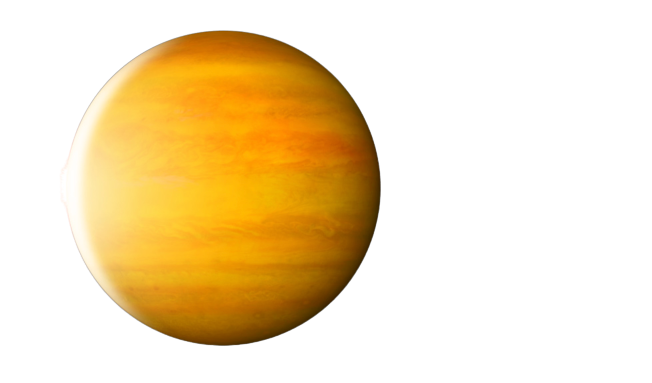
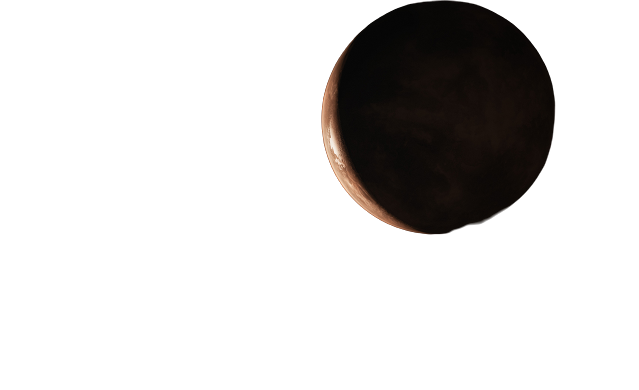
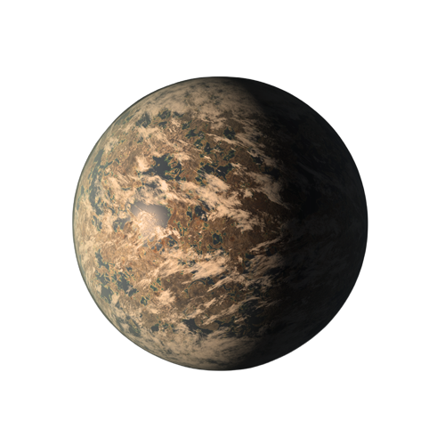
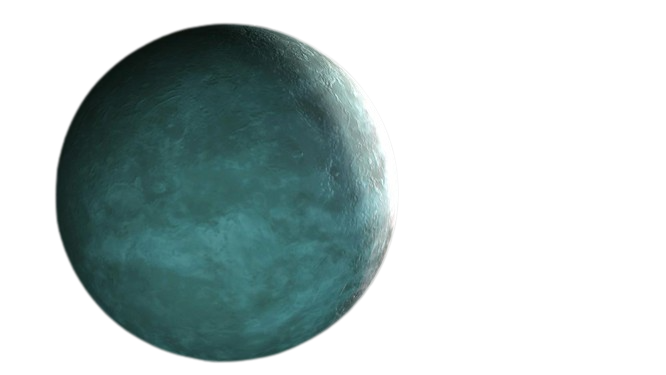

51 Pegasi b
51 Pegasi b is an exoplanet located in the constellation Pegasus,
known for being the first planet discovered orbiting a Sun-like star.

Radius: 1.27 X (Jupiter)
Discovery: 1995
Type: Gas Giant
Mass: 0.46 Jupiter
Detection Method: Radial Velocity
Orbital Period: 4.2 Days
More about 51 Pegasi b:-
1. 51 Pegasi b is a hot Jupiter exoplanet located approximately 50 light-years away.
2. It was the first exoplanet discovered orbiting a Sun-like star in 1995.
3. This gas giant orbits its host star at a distance closer than Mercury's orbit around the Sun.
4. 51 Pegasi b is about half the mass of Jupiter but significantly hotter due to its close proximity to its star.
Barnard's Star b
Barnard's Star b: A nearby super-Earth orbiting Barnard's Star,
the fourth-closest known star to the Sun.

Radius: 8703.4 KM
Discovery: 2018
Type: Super-Earth
Mass: 3.2 Earth
Detection Method: Radial Velocity
Orbital Period: 233 Days
More about Barnard's Star b:-
1. A potentially rocky exoplanet with a surface temperature of -170 degrees Celsius.
2.The exoplanet resides in the habitable zone of its star but lacks the necessary conditions for life.
3. It is believed to be a frozen world with a surface covered in ice and a thin atmosphere.
TRAPPIST-1 e
Trappist-1 e: A potentially habitable Earth-sized exoplanet
in the TRAPPIST-1 system, located 39 light-years away.

Radius: 0.92 Earth
Discovery: 2017
Type: Terrestrial
Mass: 0.692 Earth
Detection Method: Transist
Orbital Period: 6.1 Days
More about Trappist-1 e:-
1. Its surface is believed to be a mix of rocky terrain and vast oceans, harboring the possibility of liquid water.
2. This intriguing exoplanet is part of a remarkable system hosting seven Earth-sized planets, a rare cosmic occurrence.
3. With a year lasting only 6.1 Earth days, its proximity to its star results in extreme temperature variations.
4. The planet's location within the habitable zone increases the chances for the existence of potential life forms.
Kepler-1655 b
Kepler-1655 b is a Neptune-like exoplanet that orbits an F-type star.

Radius: 2.213 Earth
Discovery: 2018
Type: Terrestrial
Mass: 5.4 Earth
Detection Method: Transist
Orbital Period: 11.9 Days
More about Kepler-1655 b:-
1. A planet with a mysterious, ever-changing atmosphere, creating mesmerizing celestial light shows.
2. Despite its enormous size, it has an incredibly low density, defying conventional planetary compositions.
3. An enigmatic planet exhibiting unusual gravitational interactions, challenging our understanding of celestial dynamics.
4. A world of extremes, with temperatures swinging from scorching hot to bone-chilling cold within hours.